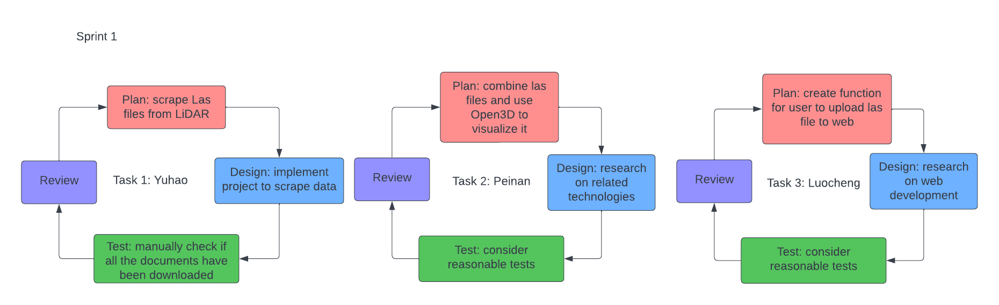

Project Update - Week 2
Sprint 1
This page summarizes the group activities and project progress in Week 2 (October 9 - October 16)
We focuses on the following user story:
"As an urban planner, I want to have a 3D view of the city, including features like roads, parks, buildings, etc. So I can make better decisions on city planning. After uploading the Lidar point cloud, a 3D rendering will be generated in the user interface. It supports basic functionalities like click and drag, zoom in and zoom out, so I can use it to show my design idea."
We have downloaded Lidar point cloud data (LAS files) for all 181 polygons of Vancouver. We have developed scripts to combine LAS files and visualize the data in Open3D. Besides, we created functions for the user to upload file in a web-based platform.

Sprint 1 Tasks
- Yuhao Hua
- Meet with Scrum Master
- Scrape LAS files from the Open Data Portal of Vancouver
- Peinan Wang
- Meet with Scrum Master
- Write script to combina LAS file and visualiza data
- Luocheng Zhu
- Meet with Scrum Master
- Create a function for user to upload LAS file to website